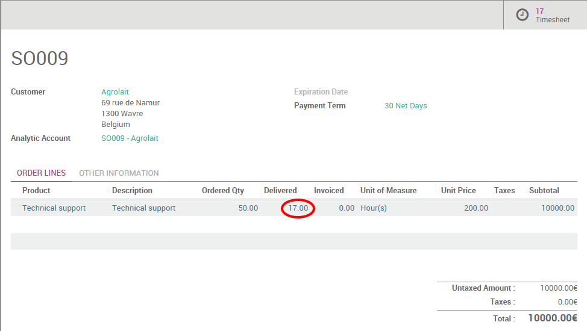

There are different kinds of service sales: prepaid volume of hours/days (e.g. support contract), billing based on time and material (e.g. billing consulting hours) and a fixed price contract (e.g. a project).
In this section, we will have a look at how to sell and keep track of a pre-paid support contract.
As an example, you may sell a pack of 50 Hours of support at $25,000.
The price is fixed and charged initially. But you want to keep track of
the support service you did for the customer.
Configuration
Install the Sales and Timesheet applications
In order to sell services, you need to install the Sales application, from the Apps icon. Install also the Timesheets application if you want to track support services you worked on every contract.


Create Products
By default, products are sold by number of units. In order to sell
services per hour, you must allow using multiple unit of measures.
From the Sales application, go to the menu
.
From this screen, activate the multiple Unit of Measures option.

In order to sell a support contract, you must create a product for every support contract you sell. From the Sales application, use the menu , create a new product with the following setup:
- Name: Technical Support
- Product Type: Service
- Unit of Measure: Hours
- Invoicing Policy: Ordered Quantities, since the service is prepaid, we will invoice the service based on what has been ordered, not based on delivered quantities.
- Track Service: Timesheet on contracts. An analytic account will automatically be created for every order containing this service so that you can track hours in the related account.
Tip
There are different ways to track the service related to a sales order or product sold. With the above configuration, you can only sell one support contract per order. If your customer orders several service contracts on timesheet, you will have to split the quotation into several orders.
Note that you can sell in different unit of measure than hours, example:
days, pack of 40h, etc. To do that, just create a new unit of measure in
the Unit of Measure category and set a conversion ratio compared to
Hours (example: 1 day = 8 hours).
Managing support contract
Quotations and Sales Orders
Once the product is created, you can create a quotation or a sales order with the related product. Once the quotation is confirmed and transformed into a sales order, your users will be able to record services related to this support contract using the timesheet application.

Timesheets
To track the service you do on a specific contract, you should use the
timesheet application. An analytic account related to the sale order has
been automatically created (SO009 - Agrolait on the screenshot here
above), so you can start tracking services as soon as it has been sold.

Control delivered support on the sales order
From the Sales application, use the menu to control the progress of every order. On the sales order line related to the support contract, you should see the Delivered Quantities that are updated automatically, based on the number of hours in the timesheet.
Upselling and renewal
If the number of hours you performed on the support contract is bigger or equal to the number of hours the customer purchased, you are suggested to sell an extra contract to the customer since they used all their quota of service. Periodically (ideally once every two weeks), you should check the sales order that are in such a case. To do so, go to .
Tip
If you use Odoo CRM, a good practice is to create an opportunity for every sale order in upselling invoice status so that you easily track your upselling effort.
If you sell an extra support contract, you can either add a new line on the existing sales order (thus, you continue to timesheet on the same order) or create a new order (thus, people will timesheet their hours on the new contract). To unmark the sales order as Upselling, you can set the sales order as done and it will disappear from your upselling list.
Special Configuration
When creating the product form, you may set a different approach to track the service:
- Create task and track hours: in this mode, a task is created for every sales order line. Then when you do the timesheet, you don't record hours on a sales order/contract, but you record hours on a task (that represents the contract). The advantage of this solution is that it allows to sell several service contracts within the same sales order.
- Manually: you can use this mode if you don't record timesheets in Odoo. The number of hours you worked on a specific contract can be recorded manually on the sales order line directly, in the delivered quantity field.